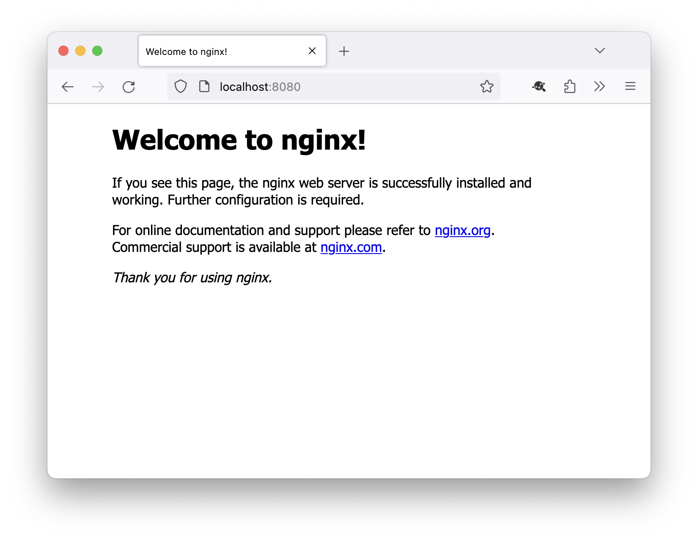
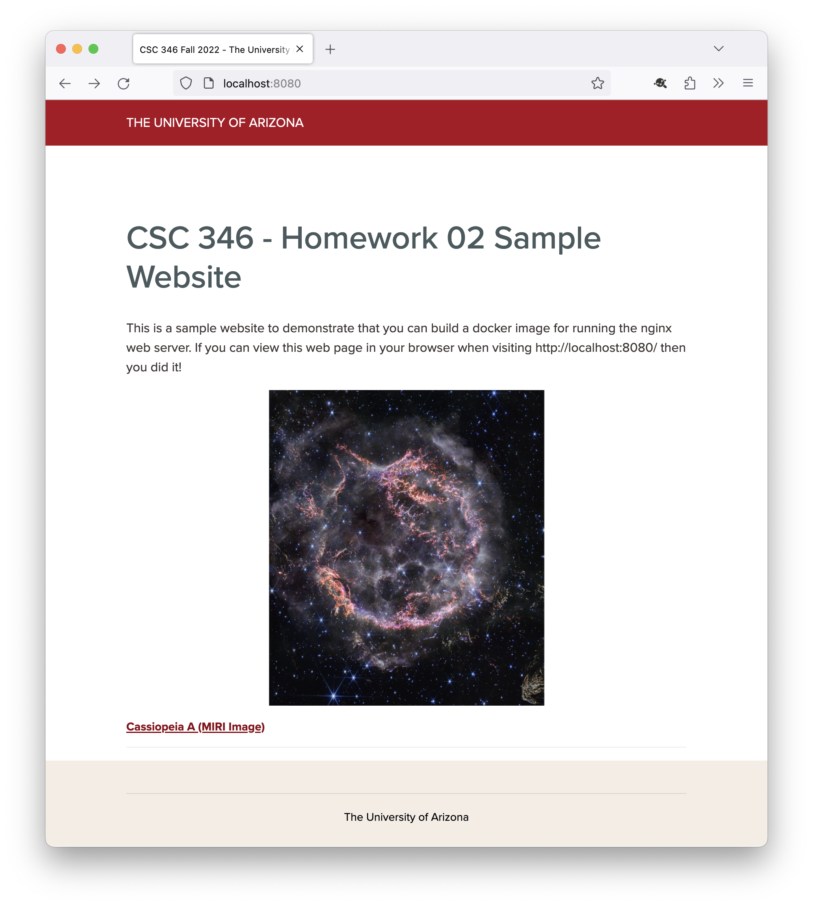
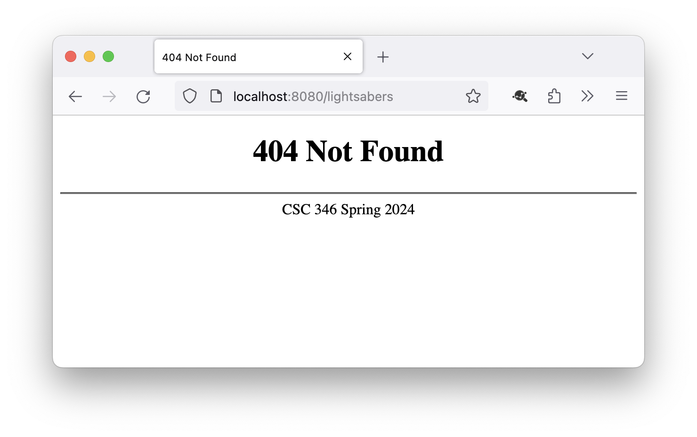

Homework 2 #
In this assignment you will create a Dockerfile and image which will serve up a simple website.
Points #
This assignment will be worth 50 points. Turning the assignment in early will earn you an additional 4 points extra credit.
- Early submission: February 1st 11pm MST (UTC-7)
- Final Due Date: February 3rd 11pm MST (UTC-7)
Starting Point #
For each homework assignment I will provide a starter .zip file. The starter zip for this assignment contains an empty Dockerfile you will fill out with commands to build an image.
https://www2.cs.arizona.edu/classes/cs346/spring24/homework/NETID-hw02.zip
Part 1 - Dockerfile #
nginx #
There are many web server applications out there: Apache httpd, nginx, Microsoft IIS, and more.
We'll use the nginx web server for our first image that we build. It is lightweight, fast, and focused on the core jobs of a HTTP server.
There is an official httpd image maintained by the nginx project.
There is an official nginx image maintained on Docker Hub. https://hub.docker.com/_/nginx
You will use two different versions of this image for this problem. For the development phase, use the 1.25 version of the image. Once you get everything working and are satisfied, switch to the 1.25-alpine version.
Why nginx:1.25 and not nginx:latest? You can never tell when software projects are going to update things. Who knows when 1.26 will be released. Maybe something will change in a newer version that makes some of these homework instructions not quite work right. It's pretty unlikely that a project will update things in a breaking way in the 2 weeks or so a homework assignment is out there, but you never know! This should help introduce you to the idea of pinning your depencencies to a known good version. This allows you the flexibility (but also the responsibility) to update things on your schedule, and not someone elses'.
About Alpine #
https://alpinelinux.org/about/
Alpine linux is an extremely small and minimal distribution of the linux operating system. Docker images based on alpine are typically an order of magnitude smaller than their corresponding 'full' images. For example, the nginx:1.25 image is about 135MB in size, while the nginx:1.25-alpine image is only 43MB. Other images are even more dramatic, the python:3.10 image we've been using so far weighs in at 1.01GB, while the python:3.10-alpine image is only 55.1MB!
So why don't we use alpine all the time? Well quite frankly there's nothing in them, that's why they're so small. There's no bash shell, you have to use the very minimal sh shell. There are no manual pages for anything, and the man command does not exist. There's no ssh, no vim, and no other common system languages such as perl. Additionally the commands it does support, like the basics of ls, cd, grep, etc are all actually aliases to the busybox program. Busybox aims to recreate most of the common functionality of many commands, but with a focus on size and efficiency. So it won't have all the options available and may behave differently than the 'real' versions of these commands. However the busybox binary is only 873K, which is smaller than the full versions of ls (140K), cp (136K), grep (175K), mv (132K), and tar (524K) combined, yet provides dozens more commands.
Remember when I mentioned that speed of deployment makes a difference? Being able to deploy a 50-60MB image takes much less time than deploying a nearly 1GB image.
However, due to the limitations in alpine, I definitely do not recommend starting there. Get everything working first, and then switch to alpine for final testing, and submit that version of the Dockerfile.
Start Simple and Iterate #
Start with a very basic Dockerfile. You can have just a single line in there to start with, and then build the image from that and try to run it. Yours should behave exactly like the default nginx:1.25 image at this point.
What is the most basic Dockerfile you can make?
Can you perform a very basic docker build ... command succesfully?
As you make progress with various steps, you can update your Dockerfile, re-build your image, and run a new container from the updated image.
Port Mappings #
In order for you to see the web page the container will serve up from your host's browser, you must expose ports from inside the container. You do this with the -p option to the docker run command. Read up on the syntax of port mapping at the Docker documentation site.
The httpd server runs on port 80 by default inside the container, and you will need to map that to port 8080 on your host. You should be able to view the default web page by going to http://localhost:8080/ in your browser.

Website #
Rather than simply serving up a default web page, I have prepared a very basic website for you to use instead. It is located here:
https://www2.cs.arizona.edu/classes/cs346/spring24/homework/hw02-files.tar
You will need to download this file into your container during the build process, 'un-tar' it, and replace the default webpage that comes with nginx. To download the file, I would recommend using the curl command that is available with the nginx image.
Important It's fine to download this.tarfile to your workstation and play around with it during development, but it won't be part of your assignment submission. Commands to download this file and set it up in the image must all be part of yourDockerfile.
Once you have downloaded the .tar file, you will need to un-tar it, then move the files from the hw02-files directory that was unzipped and replace the default files. If you haven't used the tar command before, the basics of the command are:
$ tar [options] [filename.tar]
$ tar -xf hw02-files.tar
The -xf options tells the tar command to "eXtract" an archive, and that the source to extract is coming from a "File" and not STDIN.
Move the files from the expanded folder into the default website location within the container. See the next section for hints on where that might be.
When you get everything working, you should be able to see the following in your browser when running your container and visiting http://localhost:8080/.

Modify nginx default config #
Lastly we want to change some of the default configuration of the nginx web server. To do this, we must first get a copy of the default default.conf file out of the container. Refer to the lectures slides for ways we discussed on getting things out of a container.
The configuration file is located at /etc/nginx/conf.d/default.conf inside the container.
When you get the file, place it in your working directory on your host, in the same folder your Dockerfile is in.
Open default.conf in your editor of choice, and look for the error_page directive. Un-comment this line be removing the leading # character, and save the file.
Official nginx documentation
https://nginx.org/en/docs/
Update your Dockerfile to put your version of default.conf into the container, overwriting the one from the base image.
Perform a new build, and run your container to test your configuration change. If you visit a page that doesn't exist, such as http://localhost:8080/lightsabers you should see a version of the 404 error page that has "CSC 346 Spring 2024" in the footer instead of the default "nginx 1.25". If you see that version of the error page then you've got it correct!

Where should the website files go? #
Poke around! Use your unix command line tools to look at where you are when you enter the container. What files and folders are here? Do you see anything that look like web pages? Look through the default.conf configuration file. Is there anything in there that hints at where web pages are stored?
What to turn in #
You should turn in a zip file of a folder containing two files: your Dockerfile and your modified default.conf
yournetid-hw02/
Dockerfile
default.conf
Zip up the whole folder, not just the two files inside it. Turn in the zip file to D2L.
Don't forget to switch your base image to nginx:1.25-alpine and test that before turning in.
Double Check! Not sure if your .zip file is correct? Try expanding it and see what's actually inside before you turn it in.
Debugging Errors #
Getting unable to connect errors in your browser when trying to access your container? #
Here are a couple ideas on how to troubleshoot.
- Go back a step. Rather than running your image, can you get the
nginx:1.25image to work? Maybe the problem is not with your image, but how you're running it. - Is nginx running inside your container? What unix command could you use to find this out?
- When you issued your
docker runcommand, what command did you tell the container to execute? If you are in a bash shell, does that override the default imageCMD? - Can you start nginx manually from within the container? What is the default
CMDthat thenginx:1.25image has set? How could you find that out? (hint, look at Docker Hub: https://hub.docker.com/_/nginx and find the Dockerfile for 1.25) - Did you get your port mappings correct? You should be using
8080for your host port, and80for your container port. What URL are you going to in your browser to test?
Did you run nginx but now can't get out of it?
#
Most running unix programs can be quit by holding down the control key along with the c key. You may see this abbreviated as ^c or sometimes just referred to as 'cancel'.
The nginx container runs but I still only see the default site.
#
Make sure you are putting the new website files into the correct location inside the container. Connect to the running container with a new bash shell and explore the file system. Where did your files actually end up?
Getting a caught SIGWINCH, shutting down gracefully error when running your container?
#
Sometimes resizing your terminal window after running the container results in these errors. Use ctrl-c to cancel your running container and re-start it.
So far in class we've only run containers with the -it options. This runs the container in an interactive mode and connects the terminal.
However the nginx program doesn't like the -t option if you run it directly from docker run instead of manually from a shell inside the container. Try removing the -t option and running it again. You'll have to remember to replace it if you need to poke around inside your container again, or you could have nginx running in one terminal, and then use docker exec to connect a second terminal to the running container, and poke around there.
You can also explore the -d option instead of -it. This runs the container in detached mode. It will just print the container ID and return you to your terminal. This is how most services are run in production, where you just want the main program (httpd in our case) to run continually.
How do you exit a detached container? Look at the documentation for docker stop.